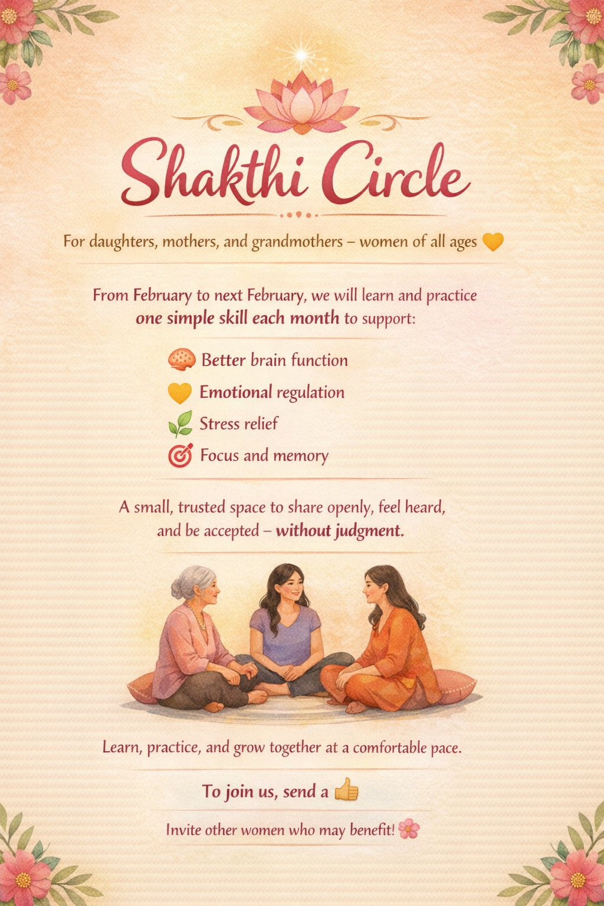
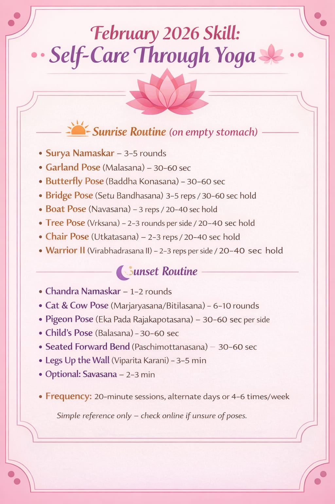
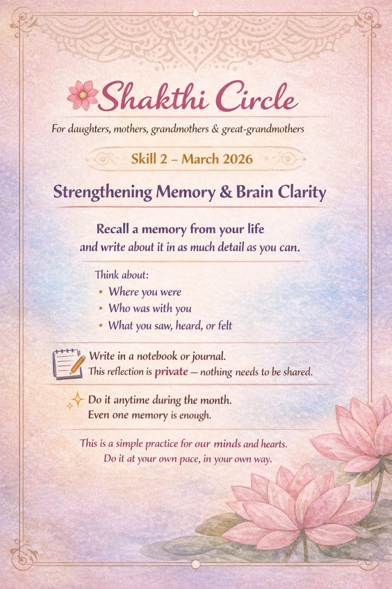
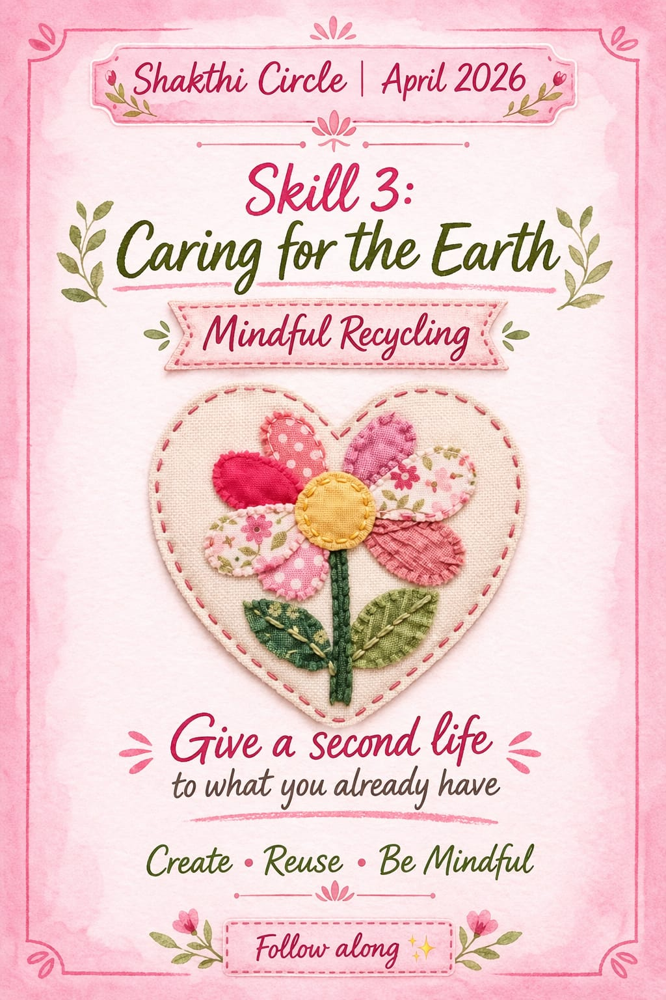
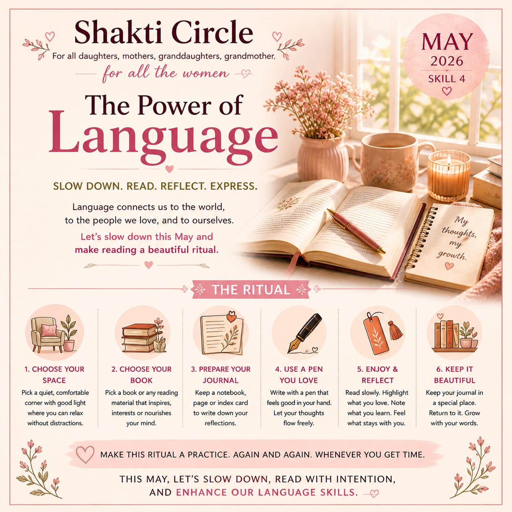
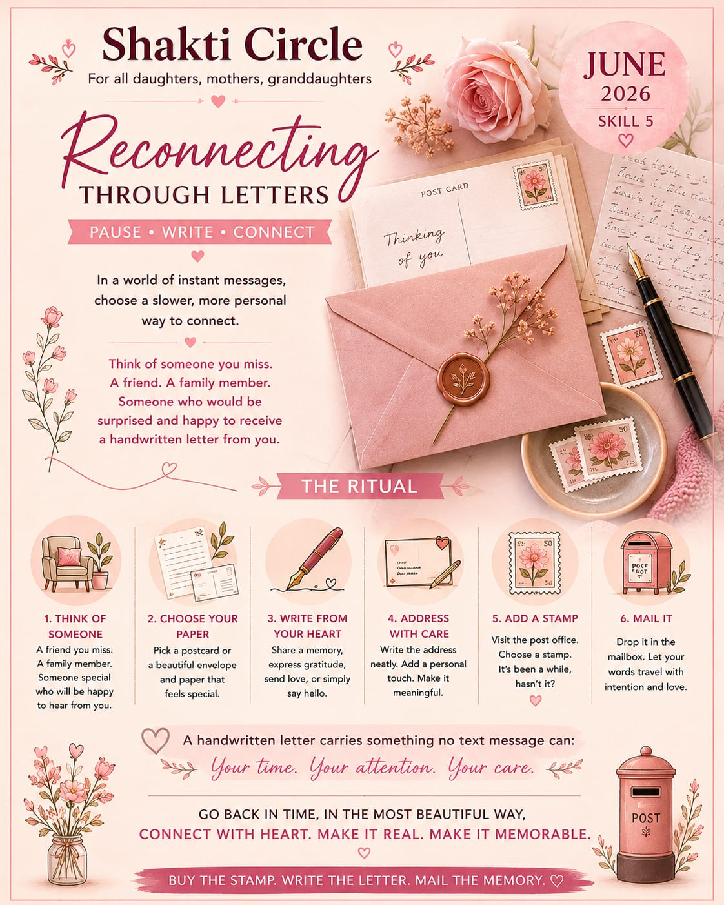
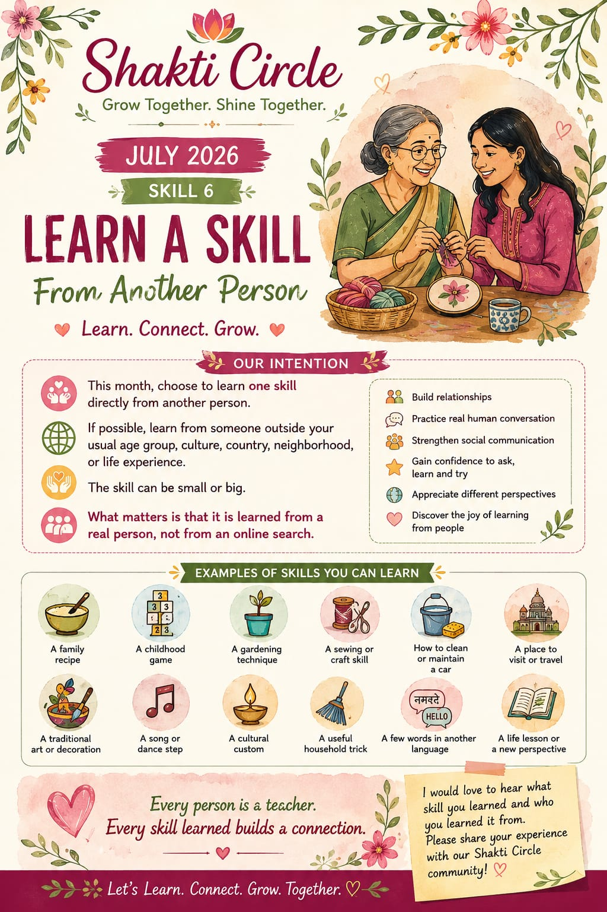

A self-love activity, one skill a month — for daughters, mothers, and grandmothers. Do it for yourself, at your own pace, whenever you are ready.
Join on WhatsApp →Invite other women who may benefit
Not ready to join yet? Follow the Shakthicircle Highlight on Instagram or search #myshakthicircle

A small, trusted WhatsApp space where women of all ages come together — daughters, mothers, grandmothers, great-grandmothers. One simple skill each month, chosen just for you.
You do it when you are ready, how you are ready. Even one skill in a whole year, done with full attention and real feeling, is enough.
No schedule. No deadline. Every skill stays in the channel. Come back to it on a Tuesday morning or a quiet Sunday — whenever feels right.
Open, warm, without judgment. If you ever need help with a skill, just reach out. This space holds you.
“Every moment is a fresh beginning.”
Each month opens a different door — a yoga practice, a memory ritual, a creative act, a return to language. Simple, meaningful, yours.

February 2026 — Skill 1
Gentle yoga routines for body, mind, and energy. Sunrise and sunset practices to start and end the day with care.

March 2026 — Skill 2
Recall a memory from your life and write it in detail. A simple private practice for the mind and heart.

April 2026 — Skill 3
Give a second life to what you already have. Transform old items into new keepsakes.

May 2026 — Skill 4
Slow down, read, reflect, express. Make reading and writing a gentle ritual — in any language you know.

June 2026 — Skill 5
Pause. Write. Connect. A handwritten letter to someone you miss — a gift that can be treasured for years.
August – February
Six more skills, announced each month. Every one chosen to nourish, strengthen, and inspire.

July 2026 — Skill 6
Every person we meet carries a lifetime of experiences, stories, traditions, and skills. Some are passed down through generations, some are shaped by culture, and some come from everyday life.
Recently, I learned about tactile art created for people who are blind. It made me realize how much of life remains unexplored simply because I haven't met the people who know it.
Today, whenever we want to learn something, our first instinct is often to search online. This month, let's try something different.
Learn one skill directly from another person.
If possible, choose someone outside your usual age group, culture, country, neighborhood, or life experience.
No skill is too small.
It could be a family recipe, a childhood game, a gardening tip, a craft, a household trick, a few words in another language, a cultural tradition, a practical life skill, or simply a different way of doing something.
This month's skill is about much more than learning. It's about building relationships. It's about having real conversations. It's about asking questions with curiosity and listening with respect. It's about gaining the confidence to learn from people around us and appreciating that everyone has something valuable to teach.
Let's make people our teachers again.
I'd love to hear what skill you learned, who taught you, and what made the experience special. Please share your journey with our Shakthicircle community so we can all learn from one another.
🌿 Learn. Connect. Grow.